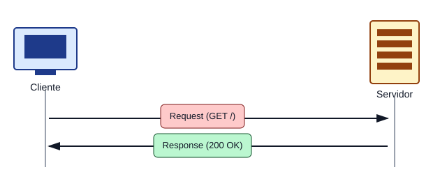

Abrir enlaces en nuevas pestañas
Pregunta nro 1
¿Sobre qué protocolo binario está montado el protocolo HTTP?
Respuesta: HTTP viaja montado sobre TCP (Transmission Control Protocol), que arma los datos en paquetes binarios y garantiza que lleguen completos y en orden entre cliente y servidor. TCP, a su vez, corre sobre IP.
Pregunta nro 2
¿Cuáles son los clientes HTTP y los servidores HTTP más utilizados?
Respuesta: Como clientes: los navegadores (Chrome, Firefox, Edge, Safari), CURL y las librerías nativas de los lenguajes de programación (fetch en JavaScript, requests en Python, etc.). Como servidores: Apache, Nginx e IIS son los más usados.
Pregunta nro 3
¿Qué verbos admite un comando en el requerimiento HTTP?
Respuesta: Los principales son GET (leer un recurso), POST (enviar/actualizar datos), PUT (crear un recurso) y DELETE (borrar un recurso). También existe CONNECT, usado por los proxys.
Pregunta nro 4
¿Qué contenido lleva el body de un requerimiento HTTP?
Respuesta: Puede llevar datos ingresados en los campos de un formulario o archivos enviados en un proceso de upload. En general puede ser cualquier tipo de dato (texto, JSON, binario, etc.), según lo indique el header Content-Type.
Pregunta nro 5
¿Qué diferencia existe entre una URL y una URI?
Respuesta: La URI (Uniform Resource Identifier) es el identificador del recurso dentro del servidor, por ejemplo /clientes/marta. La URL (Uniform Resource Locator) es la dirección completa que incluye protocolo, host, dominio y puerto además de la URI, por ejemplo http://miempresa.midominio:8080/clientes/marta.
Pregunta nro 6
¿Cómo se almacena información relacionada con las respuestas HTTP?
Respuesta: Se almacena como cache en el navegador. Los headers de la respuesta (Cache-control, Expires, Last-Modified, ETag) le indican al cliente si puede guardar el recurso y por cuánto tiempo, para no tener que volver a pedirlo al servidor.
Pregunta nro 7
¿Qué significa HTTP sobre conexiones preexistentes?
Respuesta: Significa que el cliente reutiliza la misma conexión TCP ya abierta para pedir varios recursos seguidos (header Connection: keep-alive), en lugar de abrir y cerrar una conexión nueva por cada requerimiento. Esto hace la comunicación más rápida.
Pregunta nro 8
¿Qué significa Virtual Hosting?
Respuesta: Es la capacidad de un servidor web de atender múltiples dominios distintos usando una sola dirección IP, identificando a cuál sitio corresponde cada pedido gracias al header Host que envía el navegador.
Pregunta nro 9
¿Qué significa Cache por ETag?
Respuesta: Es un sistema de cache donde el servidor asigna a cada recurso una etiqueta única (ETag) que cambia cada vez que el recurso se modifica. El navegador la guarda y la envía en el próximo pedido (header If-None-Match); si no cambió, el servidor responde "304 Not Modified" y el navegador usa la copia que ya tiene, ahorrando ancho de banda.
Pregunta nro 10
¿Por qué el HTTP se considera STATE LESS?
Respuesta: Porque cada requerimiento es independiente: el servidor no recuerda nada de los pedidos anteriores del mismo cliente. Al terminar la conexión se pierde cualquier estado, salvo que se use algo adicional (como cookies o sesiones) para simular que el servidor "recuerda" al usuario.
Pregunta nro 11
¿Qué nueva versión de HTTP se está usando para mejorar la velocidad de la web?
Respuesta: HTTP/2 (desde 2015), que usa mensajes binarios, multiplexa pedidos y respuestas, comprime los headers y prioriza recursos. Más recientemente, HTTP/3 (2019), montado sobre QUIC/UDP en lugar de TCP.
Pregunta nro 12
¿Cómo va a mejorar el comportamiento de una aplicación web en ambientes ruidosos o de débil conexión?
Respuesta: Con HTTP/3, que al usar QUIC sobre UDP en lugar de TCP logra reconectarse mucho más rápido cuando hay cortes o pérdida de paquetes (por ruido, mala señal o mucho tráfico), sin tener que rearmar toda la conexión desde cero. Mejora la reconexión más que la velocidad pura de transmisión.
En esta sección mostramos una imagen representativa del ciclo de solicitud y respuesta del protocolo HTTP.

En esta sección mostramos un video representativo del protocolo HTTP.